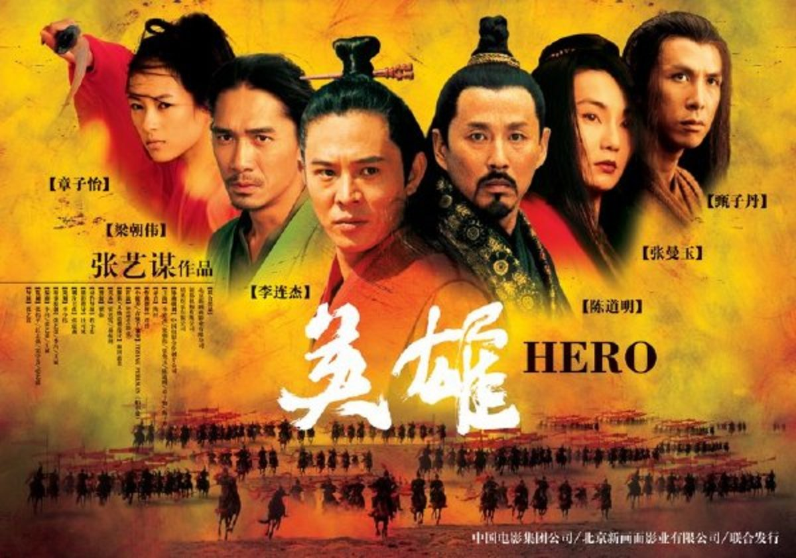

China (Chinese Cinema)
China's film industry has experienced remarkable growth over the past decades,
becoming one of the world's largest movie markets. Chinese cinema has produced
numerous successful domestic films and has also attracted international attention
with co-productions and blockbuster releases. China's box office influence has
expanded globally, making it a key player in the film industry.



Chinese cinema is a vast and diverse landscape with a rich history that dates back to the early 20th century.
Here are some significant parts of Chinese cinema:Shanghai Silent Film Era: In the 1920s and 1930s,
Shanghai was the hub of Chinese cinema. Many silent films were produced during this era,
and the industry saw the rise of stars like Ruan Lingyu. "The Goddess" (1934) and "Spring in a Small Town"
(1948) are notable films from this period.
Golden Age of Hong Kong Cinema: During the 1980s and 1990s, Hong Kong cinema experienced a golden age of filmmaking.
Renowned directors like John Woo and Tsui Hark produced iconic action films, such as "A Better Tomorrow" (1986) and
"Once Upon a Time in China" (1991). This era also saw the emergence of stars like Chow Yun-fat and Jackie Chan.
Fifth Generation Filmmakers: In the 1980s, a group of filmmakers emerged from the Beijing Film Academy, known as the
Fifth Generation. Directors like Zhang Yimou and Chen Kaige gained international acclaim for their visually stunning
and thematically powerful films. "Raise the Red Lantern" (1991) and "Farewell My Concubine" (1993) are prime examples.
Sixth Generation Filmmakers: During the 1990s and 2000s, a new wave of filmmakers,